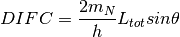

AlignDetectors dialog.
Table of Contents
Performs a unit change from TOF to dSpacing, correcting the X values to account for small errors in the detector positions.
| Name | Direction | Type | Default | Description |
|---|---|---|---|---|
| InputWorkspace | Input | MatrixWorkspace | Mandatory | A workspace with units of TOF |
| OutputWorkspace | Output | MatrixWorkspace | Mandatory | The name to use for the output workspace |
| CalibrationFile | Input | string | Optional: The .cal file containing the position correction factors. Either this or OffsetsWorkspace needs to be specified. Allowed extensions: [‘.h5’, ‘.hd5’, ‘.hdf’, ‘.cal’] | |
| CalibrationWorkspace | Input | TableWorkspace | Optional: A Workspace containing the calibration information. Either this or CalibrationFile needs to be specified. | |
| OffsetsWorkspace | Input | OffsetsWorkspace | Optional: A OffsetsWorkspace containing the calibration offsets. Either this or CalibrationFile needs to be specified. |
This algorithm applies a calibration table to convert a workspace from
time-of-flight to dSpacing as described below. The equation in GSAS converts from
d-spacing ( ) to time-of-flight (
) to time-of-flight ( ) by the equation:
) by the equation:

The manual describes these terms in more detail. Roughly,
 is related to the difference between the measured and
actual time-of-flight base on emission time from the moderator,
is related to the difference between the measured and
actual time-of-flight base on emission time from the moderator,  is an empirical term (ideally zero), and
is an empirical term (ideally zero), and  is
is

Measuring peak positions using a crystal with a very well known lattice constant will give a good value for converting the data. The d-spacing of the data will be calculated using whichever equation below is appropriate for solving the quadratic.
When  then the solution is just for a line and
then the solution is just for a line and

For the case of needing to solve the actual quadratic equation

Here the positive root is used when  and the negative
when
and the negative
when  .
.
This algorithm always uses a calibration table which it either reads from the CalibrationWorkspace property, or uses ConvertDiffCal or LoadCalFile to produce.
Note: the workspace that this algorithms outputs is a ragged workspace.
The input workspace must contain histogram or event data where the X unit is time-of-flight and the Y data is raw counts. The instrument associated with the workspace must be fully defined because detector, source & sample position are needed if an OffsetsWorkspace is provided.
Example: Use offset to move peak in Dspace
ws = CreateSampleWorkspace("Event",NumBanks=1,BankPixelWidth=1)
ws = MoveInstrumentComponent(Workspace='ws', ComponentName='bank1', X=0.5, RelativePosition=False)
wsD = ConvertUnits(InputWorkspace='ws', Target='dSpacing')
maxD = Max(wsD)
offset = GetDetectorOffsets(InputWorkspace='wsD', DReference=2.5, XMin=2, XMax=3)
wsA = AlignDetectors(InputWorkspace='ws', OutputWorkspace='wsA', OffsetsWorkspace='offset')
maxA = Max(wsA)
print("Peak in dSpace {:.11f}".format(maxD.readX(0)[0]))
print("Peak from calibration {:.10f}".format(maxA.readX(0)[0]))
Output:
Peak in dSpace 2.66413186052
Peak from calibration 2.5596132087
Categories: Algorithms | Diffraction\Calibration
C++ source: AlignDetectors.cpp (last modified: 2018-03-07)
C++ header: AlignDetectors.h (last modified: 2018-03-07)